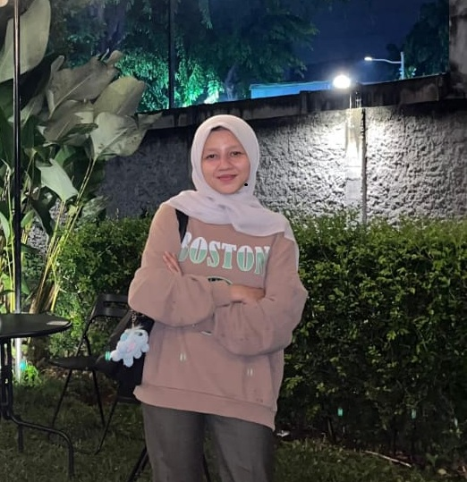

Happy Birthday, Sipaaa sayangggg!

Barakallah fii umrik, partner in crime menuju Jannah-ku! 😜
Walau jauh di mata, kamu tetap orang yang paling sering aku sebut dalam doa.
Semoga di umur yang baru ini makin banyak berkah, makin sholehah, dan makin disayang Allah.
Doa tambahannya simpel: Semoga kamu sehat selalu, jadi calon makmum terbaik nanti, dan semoga Allah segera *ACC* proposal doa kita buat ketemu ya! Aamiin.
Sabar ya di sana. Makasih udah jadi alasanku tersenyum (walau cuma lewat chat). Kangen banget! Aku sayang kamu sipaaa!.
Dengan segenap cinta,
Banglaaa-mu
Cerita Singkat Kita 🤍
💖 Awal Mula
Aku masih ingat banget hari pertama kita ketemu di kelas mu, kelas 10 B. Waktu itu aku notice ada orang baru nih, soalnya kan smansa banyak anak anak dari smp 1 sama smp 2. kemudian berlanjut kita sekelas, kita ngabisin waktu bersama sayang ada covid huhuuh. waktu berlalu ketika kita makin sering ngopi bareng aku mulai naruh hati ke kamu tauuu. setelah kita main bareng terus, kamu selalu berbeda dipandanganku. ehh doaku sekarang terkabul hehehe.
✨ Momen Favoritku
Dari semua kenangan kita, aku paling suka waktu kita main ke pantai bareng, waktu itu kita udah seng seng ngan tau, aku ngode hehehe dari sebelum sebelumnya malah. kemudian ngopi bareng setelah kita punya status rasanya dreg deg. tapi feedback mu yang seperti ngasih pesen "udah atuh seng gausah jaim" dari situ aku mulai ga terlalu dreg deg, dan mulai berani. Rasanya simpel tapi berarti banget buat aku.
💌 Kenapa Aku Sayang Kamu
Jujur, kalau disuruh nulis semua alasannya, website ini bakal penuh. Tapi aku sayang banget hal-hal kecil tentang kamu, seperti caramu ketawa ngeselin atau caramu yang cengcengin aku dan kamu yang cegil cyentil. Aku sayang caramu ngirim pesan 'semangat ya' setiap hari yang selalu bisa bikin hariku jadi lebih baik. Aku senang ketika kamu bercerita tentang hari harimu dan apapun yang kamu rasakan dan apapun yang kamu alami dihidupmu. Aku suka ketika kamu melibatkan aku di dalam kegiatanmu yang membuat diriku merasa aku berharga. Selamat ulang tahun sekali lagi, ya. Aku beneran seberuntung itu punya kamu.